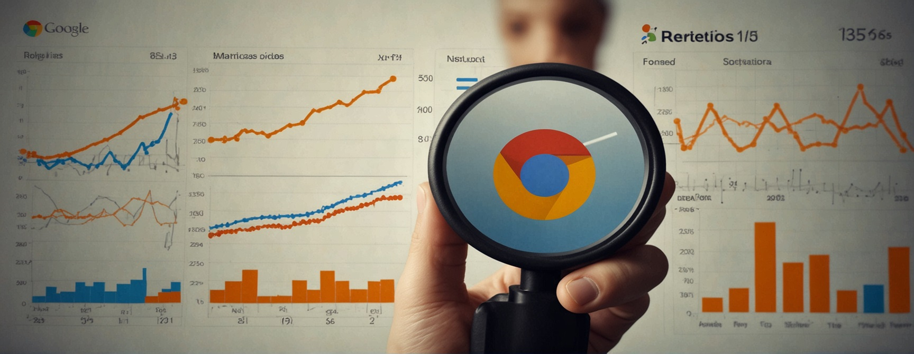
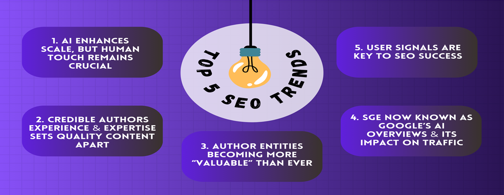
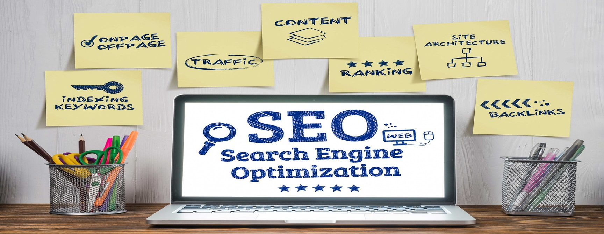

Design demand capture that compounds
Shift from keyword chasing to loop design: distribution → intent → conversion → reinvestment.
Explore acquisition insightsFrameworks, measurement, and playbooks built for scale beyond channel tactics.
POWERING DATA-DRIVEN GROWTH
Four pillars that keep acquisition compounding: acquisition loops, measurement, content as product, and lifecycle retention.
Shift from keyword chasing to loop design: distribution → intent → conversion → reinvestment.
Explore acquisition insightsDefine north-star metrics, map the funnel, and hold content accountable to revenue outcomes.
See measurement playbooksEditorial systems, content-led UX, and quality signals that win in search and retention.
Browse content strategyRetention, activation, and lifecycle journeys that expand LTV beyond acquisition.
Discover lifecycle thinkingSEO is the lever. Revenue is the outcome. Selected impacts from recent growth sprints.
Attributed via multi-touch model across B2B SaaS portfolio.
Achieved by scaling organic intent to replace high-cost paid search terms.
Monthly active users acquired through "Pain-Point" SEO clusters.
A forward-looking analysis of how AI search is reshaping intent capture, content design, and organic acquisition strategy.
Fresh thinking across content strategy, industry shifts, analytics, and technical SEO.
Ready to unlock the true power of Google Analytics 4? Explore advanced techniques like audience segmentation, user journ...
New to website analytics? This guide compares Google Analytics 4 (GA4) and Universal Analytics (UA) to help you understa...
Google Analytics 4 is powerful, but integrations unlock its true potential. Learn how to connect GA4 with other Google p...

Google Analytics 4 (GA4) presents a paradigm shift in website analytics. Learn how to navigate GA4's features, unlock va...
Backlinks are still important, but there's more to SEO! Dive into the evolving world of ranking factors and discover new...
Ever heard of EAT but unsure what it means? Learn how Google uses Expertise, Authoritativeness, and Trustworthiness to r...
Voice search is booming! Learn how to optimize your website for the way people speak, not type, and capture a larger aud...

Dominate the digital jungle! Dive deep into the 5 key SEO trends shaping 2024 & discover actionable strategies to optimi...
Feeling lost in the content creation game? Learn 5 powerful content optimization tips to write content that search engin...

Backlinks are the golden tickets of SEO! Learn 4 effective strategies to acquire valuable links, improve your website's ...

Struggling to attract local customers? Local SEO is your secret weapon! Learn 6 powerful steps to optimize your website ...
Is your website feeling sluggish? Technical SEO might be the cure! Discover 7 quick and easy fixes to improve your websi...

Discover how AEO (Answer Engine Optimization) and AI are reshaping SEO in 2025. Learn to optimize for voice search, feat...
Struggling to create content that ranks and converts? Learn how to craft a strategic content plan that aligns with SEO b...
Feeling lost at sea in the world of SEO? Off-page optimization is your compass! Learn strategic link-building techniques...
Is your website content struggling to rank? Technical SEO might be the missing piece! Learn how to optimize the technica...

Feeling lost in the SEO labyrinth? This strategic SEO roadmap equips you with a clear plan to conquer technical SEO, con...
Browse my library of insights across strategy, analytics, and tactical execution.
High-level frameworks and compounding growth models.
Updates, algorithm changes, and macro search trends.
Measurement, attribution, and data-driven clarity.
Actionable advice to improve rankings and UX.
CRO, funnel optimisation, and conversion efficiency.